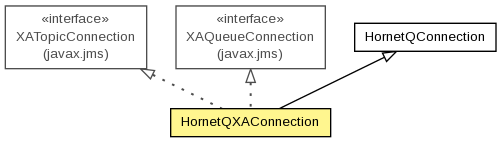

org.hornetq.jms.client
Class HornetQXAConnection
java.lang.Object
 org.hornetq.jms.client.HornetQConnection
org.hornetq.jms.client.HornetQXAConnection
org.hornetq.jms.client.HornetQConnection
org.hornetq.jms.client.HornetQXAConnection
- All Implemented Interfaces:
- javax.jms.Connection, javax.jms.QueueConnection, javax.jms.TopicConnection, javax.jms.XAConnection, javax.jms.XAQueueConnection, javax.jms.XATopicConnection
public final class HornetQXAConnection
- extends HornetQConnection
- implements javax.jms.XATopicConnection, javax.jms.XAQueueConnection

HornetQ implementation of a JMS XAConnection.
The flat implementation of XATopicConnection and XAQueueConnection is per design,
following common practices of JMS 1.1.
- Author:
- Howard Gao
| Methods inherited from class org.hornetq.jms.client.HornetQConnection |
addTemporaryQueue, authorize, checkClosed, close, containsTemporaryQueue, createConnectionConsumer, createConnectionConsumer, createConnectionConsumer, createDurableConnectionConsumer, createHQSession, createNonXAQueueSession, createNonXASession, createNonXATopicSession, createQueueSession, createSession, createSessionInternal, createTopicSession, finalize, getClientID, getExceptionListener, getFailoverListener, getInitialSession, getMetaData, getUID, hasNoLocal, removeSession, removeTemporaryQueue, setClientID, setExceptionListener, setFailoverListener, setHasNoLocal, setReference, signalStopToAllSessions, start, stop |
| Methods inherited from interface javax.jms.XATopicConnection |
createTopicSession |
| Methods inherited from interface javax.jms.TopicConnection |
createConnectionConsumer, createDurableConnectionConsumer |
| Methods inherited from interface javax.jms.XAQueueConnection |
createQueueSession |
| Methods inherited from interface javax.jms.XAConnection |
createSession |
| Methods inherited from interface javax.jms.QueueConnection |
createConnectionConsumer |
| Methods inherited from interface javax.jms.Connection |
close, createConnectionConsumer, getClientID, getExceptionListener, getMetaData, setClientID, setExceptionListener, start, stop |
HornetQXAConnection
public HornetQXAConnection(String username,
String password,
int connectionType,
String clientID,
int dupsOKBatchSize,
int transactionBatchSize,
ClientSessionFactory sessionFactory)
createXASession
public javax.jms.XASession createXASession()
throws javax.jms.JMSException
- Specified by:
createXASession in interface javax.jms.XAConnection
- Throws:
javax.jms.JMSException
createXAQueueSession
public javax.jms.XAQueueSession createXAQueueSession()
throws javax.jms.JMSException
- Specified by:
createXAQueueSession in interface javax.jms.XAQueueConnection
- Throws:
javax.jms.JMSException
createXATopicSession
public javax.jms.XATopicSession createXATopicSession()
throws javax.jms.JMSException
- Specified by:
createXATopicSession in interface javax.jms.XATopicConnection
- Throws:
javax.jms.JMSException
isXA
protected final boolean isXA()
- Overrides:
isXA in class HornetQConnection
Copyright © 2013 JBoss, a division of Red Hat. All Rights Reserved.